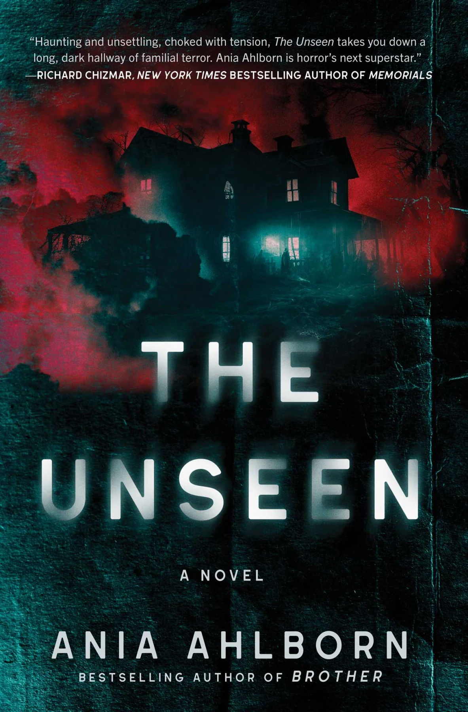

The Unseen
Autrice : Ania Ahlborn
Genre: Horreur / Surnaturel
Année de publication: 2025
Langue: Anglais

Sommaire
Isla et Luke vivent sur une grande propriété avec leur 5 enfants : August, Eden, Olive, Sophie et Willow. Ils désirent d’autres enfants, mais malheureusement Isla enchaîne les fausses couches et est très affectée à chaque fois.
Un jour qu’Isla travaillait à son jardin, un petit garçon apparaît sur leur propriété. Il est sal, maigre, incapable de communiquer et se comporte presque comme un animal. Une rencontre avec les services sociaux leur confirme que le garçon n’est pas porté disparu, mais que s’ils veulent l’adopter, il s’agit d’un garçon avec beaucoup d’enjeux.
Pour Isla ce n’est pas une question, elle voit ça comme un miracle et veut l’appeler Rowan. Luke le trouve trop étrange... Et il n’est pas loin de la vérité.
Critique
Une excellente histoire... jusqu’au dénouement.
Une ambiance inquiétante avec un mystère entourant le petit garçon sorti de nulle part, la tension entre les membres de la famille, des disparitions... le malaise s’intensifie de page en page.
Moment favori
Le sentiment de malaise constant. Tout le monde le ressent, sauf Isla.
Moment moins fort
La fin... c’est un changement de genre que je n’apprécie pas du tout.